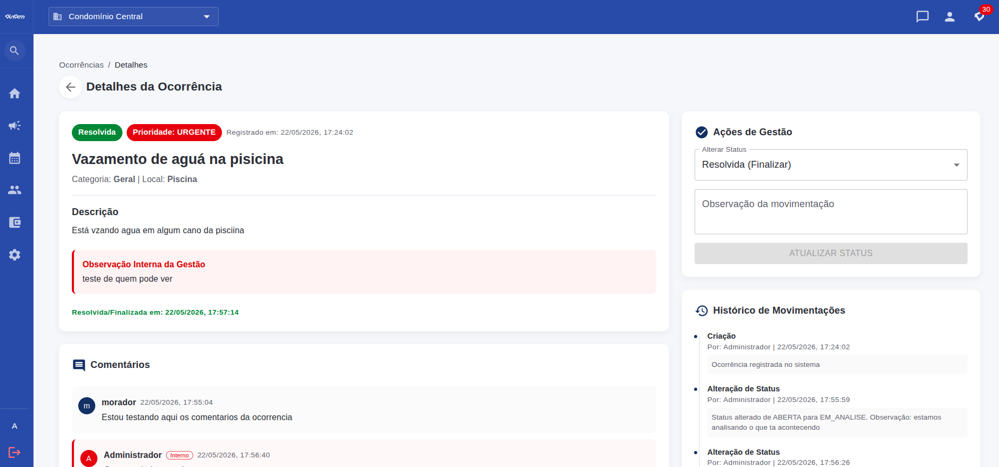
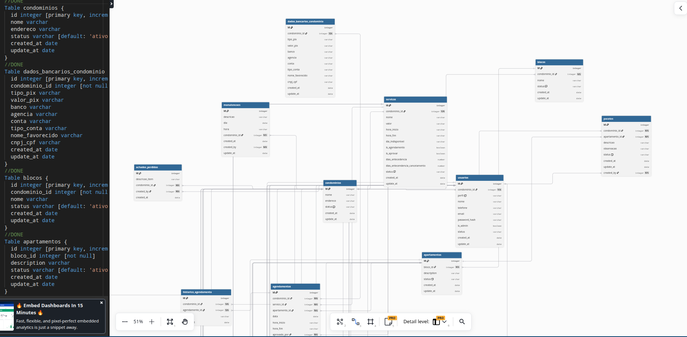

Eu transformo problemas complexos em produtos SaaS escaláveis.
Software Engineer especializada em arquitetura de sistemas, cloud computing e DevOps. Construo aplicações robustas do zero e as opero com excelência em ambientes de nuvem de alta disponibilidade.
5+
Anos de Experiência
20+
Sistemas Entregues
14+
Certificações
E2E
SaaS construídos do zero
Trajetória e Visão
A engenharia por trás do códigoNão sou apenas uma desenvolvedora que escreve código isolado. Atuo na intersecção entre negócio, engenharia de software e infraestrutura de cloud. Meu perfil é o de uma Founding Engineer: aquela profissional com autonomia e capacidade técnica para tirar um produto SaaS complexo do papel, projetar a arquitetura lógica, modelar o banco de dados, automatizar as esteiras de deploy (CI/CD) e colocá-lo em produção de forma segura.
Minha jornada é marcada pela capacidade de execução e mentalidade sistêmica. Com vasta experiência prática na construção de aplicações complexas — transitando de integrações fiscais corporativas legadas a sistemas em tempo real orientados a eventos —, eu transformo problemas operacionais e de negócios em softwares estruturados, modulares e de fácil manutenção.
"Arquitetura de software não é sobre prever o futuro, é sobre construir fundações flexíveis o suficiente para que o software possa evoluir junto com o negócio de forma barata e sustentável."
Foco em Produto
Forte alinhamento técnico com as dores de negócio, garantindo que cada decisão arquitetural gere valor operacional direto.
Autonomia Técnica
Capacidade de atuar de forma totalmente autônoma, projetando desde APIs de alta performance até servidores cloud isolados.
Múltiplas Camadas
Domínio completo do stack de engenharia: frontend performático, backend isolado por escopo, barramento de eventos, cache e bancos relacionais.
Evolução Contínua
Capacidade de absorver novas stacks com rapidez absurda, reduzindo a fricção no desenvolvimento técnico de novas features.
Arquitetura & Especialidades
Minha profundidade técnica e espectro de atuaçãoBackend Engineering
Desenvolvimento de APIs robustas, escaláveis e fortemente estruturadas. Modelagem de domínios, isolamento de lógica, controle fino de autenticação (JWT) e autorização granular (RBAC).
Cloud Architecture
Estruturação de redes e ambientes seguros em nuvem. Configuração de VPCs, isolamento de sub-redes públicas/privadas, Load Balancers, Auto Scaling e provisionamento de instâncias e storages gerenciados.
DevOps & CI/CD
Automação completa do ciclo de vida de deploys. Criação de esteiras CI/CD automatizadas, conteinerização de serviços, análise estática de qualidade de código e conformidade de vulnerabilidades.
Databases & Storage
Modelagem relacional e estruturação NoSQL. Otimização de queries, controle transacional rigoroso, isolamento lógico de inquilinos e cache estratégico para aliviar chamadas no banco.
Mensageria & Integrações
Comunicação distribuída assíncrona orientada a eventos. Integrações de barramentos de mensagens, canais bi-direcionais (WebSockets) e consumo automático de APIs legadas e de comunicação.
Frontend Engineering
Desenvolvimento de interfaces rápidas, otimizadas para SEO e focadas em usabilidade. Arquitetura orientada a componentes modulares reaproveitáveis e compilação híbrida para plataformas mobile.
Projeto Destaque
O case SaaS que consolida minha arquitetura técnicaDindom
Plataforma SaaS Multi-tenant integrada para Gestão Condominial Completa
Problema
A administração condominial e a rotina operacional sofrem com a pulverização de dados e falhas severas de comunicação. Síndicos, moradores e administradoras dependem de múltiplos canais desconexos, resultando em dados financeiros soltos, problemas com permissões de acesso e gargalos operacionais no dia a dia.
Solução e Engenharia
Uma plataforma SaaS ponta a ponta que centraliza as rotinas em módulos financeiros (contas a pagar, receber, fluxo de caixa), comunicação ativa e agendamentos. A aplicação conta com uma versão Web Administrativa altamente responsiva e um aplicativo móvel compilado nativamente.
Isolamento Lógico (Multi-Tenant)
Decisão de construir isolamento a nível de banco no PostgreSQL gerenciado (Supabase), onde cada requisição interceptada valida o domínio/inquilino e limita dinamicamente o escopo operacional de leitura/escrita.
Filas e Processamento Assíncrono com Redis
Para evitar gargalos na API principal com rotinas pesadas (documentos, relatórios financeiros e mensagens instantâneas), configurei filas de tarefas no Redis processadas em segundo plano.
Integração de Comunicação via WhatsApp API
Criação de Webhooks para processamento assíncrono de notificações transacionais diretas no WhatsApp, identificando o morador pelo número e convertendo texto em ações no sistema automaticamente.
Decisões Arquiteturais Chave
- NestJS como API Gateway: Facilita a manutenção através da injeção de dependência nativa e divisão modular de serviços.
- Capacitor para Cross-Platform: Otimização do time-to-market aproveitando a base de código do front-end React Web para gerar as versões nativas iOS/Android.
- Dockerização Completa: Containers prontos para ambientes de staging e produção, garantindo paridade total de ambiente em desenvolvimento.


Resultados em Engenharia
• Sistema operando com alta resiliência através de separação entre
API, banco de dados e Workers de fila.
• Automatização da rotina de avisos reduziu o tempo de suporte das administradoras
em mais de 60%.
• Escalabilidade simplificada: deploy unificado via contêineres Docker padronizados.
Outros Projetos de Engenharia
Soluções arquiteturais desenvolvidas para resolver desafios reais
Rastreamento de Veículos em Tempo Real
Arquitetura orientada a eventos para rastrear coordenadas físicas de frotas geograficamente dispersas e renderizar rotas instantaneamente em mapas interativos no frontend.
- Processamento massivo e assíncrono de localizações geográficas utilizando mensageria Kafka.
- Comunicação duplex leve via WebSockets para evitar overhead de polling HTTP tradicional.
- Simulação e processamento concorrente em Golang para ingestão veloz dos dados de tráfego.

Sistema Comercial & Controle Financeiro
Aplicação de gestão corporativa integrada cobrindo de ponta a ponta o fluxo de controle de estoque, fechamento de caixa, compras, vendas e histórico de relacionamento com clientes.
- Autenticação robusta stateless controlada por tokens JWT com controle de expiração.
- Modelagem de dados normalizada em MySQL para garantir consistência e atomicidade transacional.
- Segurança e validação detalhada dos dados recebidos no backend antes das transações.

Integração Fiscal SOAP para Emissão de Notas
Integração construída e acoplada em sistema legado empresarial na Tizza Tecnologia para automatizar a emissão de Notas Fiscais diretamente com os servidores da prefeitura.
- Consumo e mapeamento de contratos SOAP complexos e parsing bidirecional JSON/XML.
- Fluxo resiliente com retry automático e tratamento rigoroso de instabilidade nos servidores governamentais.
- Assinatura digital e criptografia de payloads fiscais em conformidade regulatória.

Pipeline Automatizado CI/CD & Análise de Qualidade
Arquitetura de entrega contínua estruturada para avaliar qualidade de código, checar padrões de cobertura de testes, bugs latentes, code smells e vulnerabilidades de segurança automaticamente.
- Automação de builds e validação estática via SonarQube integrada diretamente às branches do git.
- Garantia de qualidade antes de pipelines de deploy em ambientes de homologação e produção.
- Gerenciamento de credenciais e chaves SSH seguras dentro do ciclo automatizado do Jenkins.
Como eu construo software
Padrões arquiteturais, qualidade e engenharia do meu código DayMartin / @dinahmartins
DayMartin / @dinahmartins
conecta-os-backend
API RESTful modularizada construída para suportar ordens de serviço. Implementa divisão lógica por camadas (Controllers, Services, Repositories) e persistência de dados isolada de transações.
RotaMapeada
API Flask que realiza cálculos matemáticos de distância em coordenadas geográficas a partir de pontos inseridos, implementando validação de payloads com Marshmallow e ORM com SQLAlchemy.
RegressaoLinear
Engenharia de dados e modelagem estatística supervisionada para prever emissões de poluentes com base na cilindrada e peso. Tratamento rigoroso de outliers e métricas de erro.
OrdemServicoJava
Estruturação lógica e aplicação estrita de princípios de Orientação a Objetos (SOLID, Polimorfismo, Encapsulamento) aplicada no gerenciamento operacional de ordens de serviço.
Padrões de Código
Escrevo código alinhado a princípios SOLID, design patterns conhecidos e Clean Code. Garanto legibilidade e separação de responsabilidades para reduzir débitos técnicos na manutenção.
Qualidade Integrada
Uso testes de integração e unitários como pilar de confiabilidade operacional. Integro testes em esteiras CI/CD automáticas com SonarQube para barrar desvios de padrão antes do deploy.
Foco em DevOps
Acredito que o ciclo só acaba em produção. Por isso, projeto e escrevo código já pensando na sua conteinerização Docker, isolamento em nuvem e estratégias transparentes de logging e monitoramento.
Certificações e Credenciais
Validações oficiais da minha excelência técnica e arquitetural


O que me diferencia
Por que apostar no meu perfil técnicoVisão Ponta a Ponta (E2E)
Construo produtos completos sozinha. Consigo criar uma interface limpa, conectá-la a APIs eficientes, desenhar a modelagem relacional dos dados e publicar em infraestrutura escalável contêinerizada.
Pilar de Liderança & Autonomia
Possuo forte autonomia de planejamento. Tenho o perfil ideal de Founding Engineer para empresas focadas em inovação ágil, traduzindo grandes problemas de negócios em códigos e infraestruturas reais.
Foco de Engenharia Rigoroso
Não sou apegada a linguagens. Entendo a fundo os pilares fundamentais da engenharia: concorrência, latência, mensageria distribuída orientada a eventos, isolamento de dados, observabilidade e cache de memória.